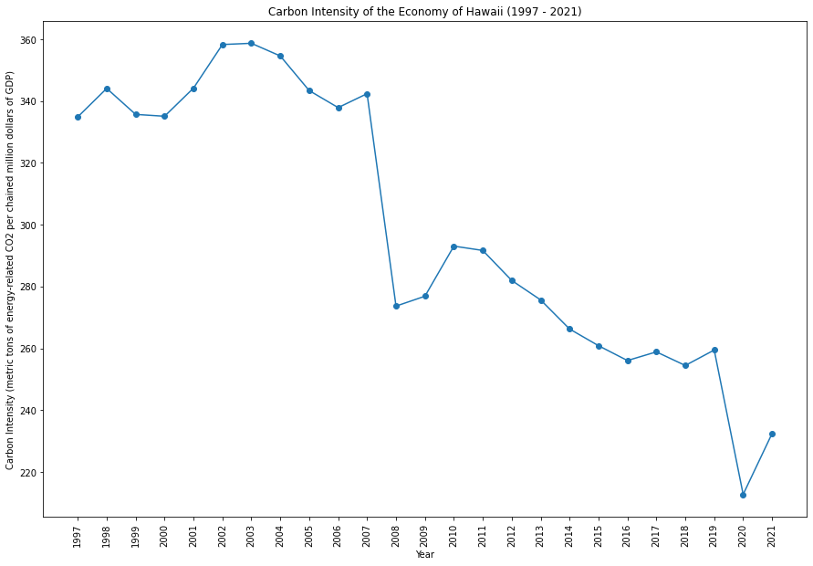

|  | |
Hawaii has made substantial progress in adopting renewable energy sources, particularly solar and wind power, to reduce its dependence on imported fossil fuels. The state has set ambitious goals for achieving energy independence and addressing climate change. Hawaii's unique geographical challenges, such as limited land area and isolated location, drive its focus on sustainability.